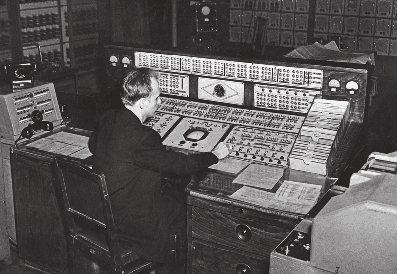

Этап
В период с 1938 года и по 1964 год кафедру «Счетно-решающие приборы и устройства» возглавлял один из его основателей, профессор Сергей Осипович Доброгурский . Богатый педагогический опыт, хорошие организаторские способности, эрудиция и авторитет С. О. Доброгурского позволили привлечь к учебной работе на кафедре крупных специалистов промышленности и НИИ, таких как профессор Калашников С. Н., профессор артиллерийской академии имени Дзержинского Пчельников Н. И., Забелин Н. А., Бородачев Н. А., Иоффе Д. М. С. О. .Доброгурский привлек для постановки курсов крупного специалиста в области применения электрических устройств в счетных приборах доцента Станиславского Б. И.
В годы Великой Отечественной войны С. О. Доброгурский, которому было уже более 60 лет, все силы отдает подготовке специалистов, необходимых нашей оборонной промышленности. Он участвует в организации эвакуации МВТУ в Ижевск и в развертывании учебного процесса и исследовательских работ на новом месте. С 1944 года по 1952 С. О. Доброгурский — декан факультета «Приборостроение». Он был среди награжденных орденом Красной Звезды в составе группы профессоров, доцентов и старших сотрудников МГТУ имени Н.Э. Баумана, обеспечивших в условиях Великой Отечественной войны подготовку высококвалифицированных специалистов и оказавших своими работами большую помощь промышленности.МЭСМ

- Описание: МЭСМ была одной из первых электронных цифровых компьютерных машин в мире. Она была разработана в конце 1940-х годов под руководством академика Сергея Алексеевича Лебедева и его коллег.
- Цель использования: МЭСМ была предназначена для решения разнообразных научных и инженерных задач, включая баллистические расчеты, расчеты аэродинамических характеристик, исследования ядерных реакций и другие вычислительные задачи.
- Характеристики: МЭСМ работала на электронных лампах и имела оперативную память, состоявшую из ферритовых сердечников. Её скорость работы была сравнительно невысокой по современным меркам, но для своего времени она была значительным достижением в области вычислительной техники.
- Важность: МЭСМ считается важным вкладом СССР в развитие вычислительной техники и была одной из первых машин, которые использовались для научных и инженерных расчетов в Советском Союзе. МЭСМ и подобные вычислительные машины стали основой для развития вычислительной науки и технологии в СССР, и они оказались полезными во многих областях науки и техники во времена Второй мировой войны и после неё.